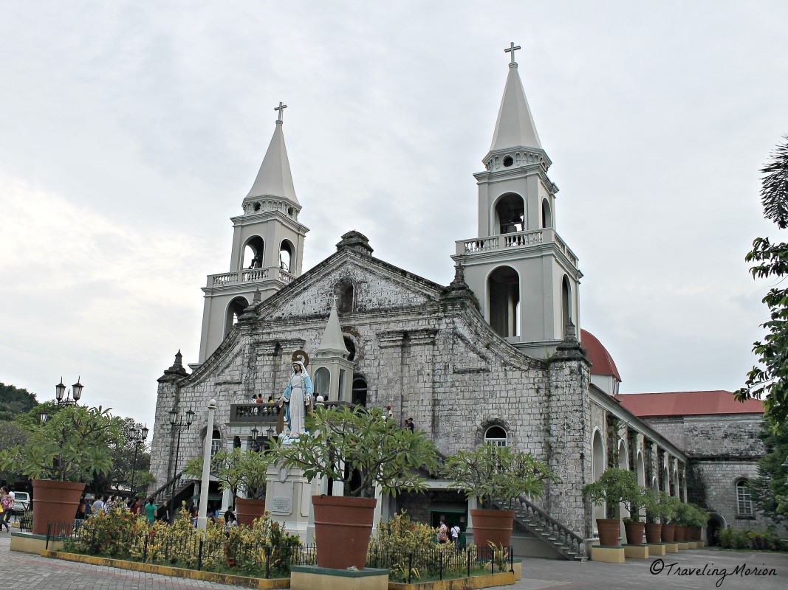

|
There are many stories that are told from generation to generation. From famous mythologies to legends that are still alive, Lakbay Alamat provides you with the origin of these stories and gives you some places to visit. This website is for tourists or people that want to know more about the culture of the Filipino people. This allows you to not only hear good stories but also make good adventures |
|
MANANANGGAL- Is a mythological creature in the Philippines that originated in Capiz, Iloilo, Bohol and Antique, which is in the western part of the Visayas region in the Philippines. Their only weakness is when the sunlight hits their skin. It is said to be the Philippine counterpart of a vampire. |
CAPIZ
Capiz is known for its capital, Roxas City. For it is known as the Seafood Capital of the Philippines, a tourist spot that you could go to is Seafood at Baybay Beach & People’s Park   ILOILO
Iloilo is known for its historical landmarks that dates back to the Spanish colonial period and churches that you can visit. Examples are the Jaro Cathedral and the Nelly Garden Mansion.  |
  BOHOL
Bohol is known for its Chocolate Hills, and the wonders it may give you. You can also visit Danao’s Adventure Park for funsies. Enjoy exploring Bohol!!! |
ANTIQUE
Antique is known for it's beautiful spots that are rumored to have mythical creatures surrounding it. The islands tend to be the tourist spots that people go to and examples of it are the Nogas Island and the Malalison Island. |
|